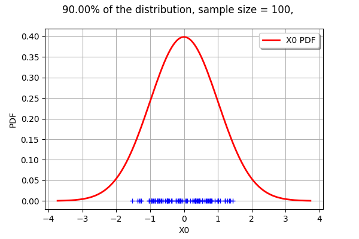
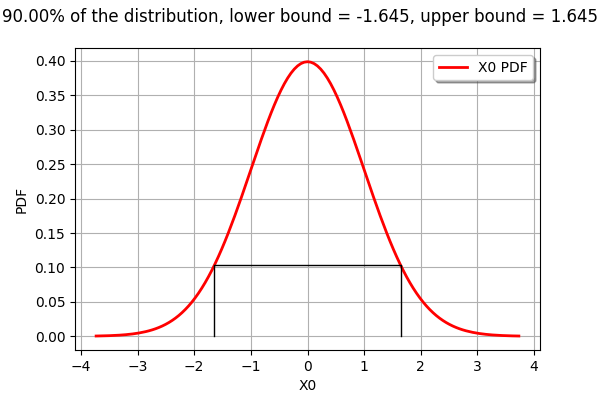
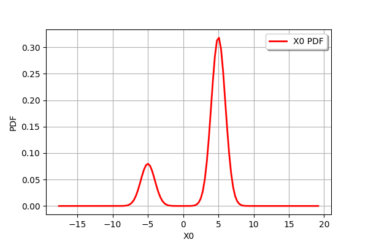
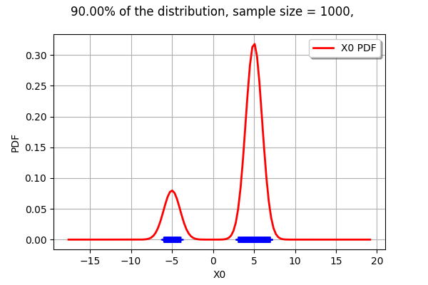
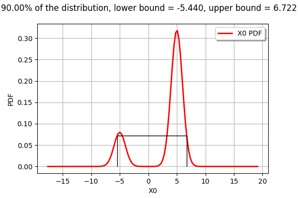

Draw minimum volume level set in 1D¶
In this example, we compute the minimum volume level set of a univariate distribution.
[1]:
import openturns as ot
With a Normal, minimum volume LevelSet¶
[2]:
n = ot.Normal()
[3]:
n.drawPDF()
[3]:

We want to compute the minimum volume LevelSet which contains alpha=90% of the distribution. The threshold is the value of the PDF corresponding the alpha-probability: the points contained in the LevelSet have a PDF value lower or equal to this threshold.
[4]:
alpha = 0.9
levelSet, threshold = n.computeMinimumVolumeLevelSetWithThreshold(alpha)
threshold
[4]:
0.1031356403794346
The LevelSet has a contains method. Obviously, the point 0 is in the LevelSet.
[5]:
levelSet.contains([0.])
[5]:
True
[6]:
def computeSampleInLevelSet(distribution, levelSet, sampleSize = 1000):
'''
Generate a sample from given distribution.
Extract the sub-sample which is contained in the levelSet.
'''
sample = distribution.getSample(sampleSize)
dim = distribution.getDimension()
# Get the list of points in the LevelSet.
inLevelSet = []
for x in sample:
if levelSet.contains(x):
inLevelSet.append(x)
# Extract the sub-sample of the points in the LevelSet
numberOfPointsInLevelSet = len(inLevelSet)
inLevelSetSample = ot.Sample(numberOfPointsInLevelSet,dim)
for i in range(numberOfPointsInLevelSet):
inLevelSetSample[i] = inLevelSet[i]
return inLevelSetSample
[7]:
def from1Dto2Dsample(oldSample):
'''
Create a 2D sample from a 1D sample with zero ordinate (for the graph).
'''
size = oldSample.getSize()
newSample = ot.Sample(size,2)
for i in range(size):
newSample[i,0] = oldSample[i,0]
return newSample
[8]:
def drawLevelSet1D(distribution, levelSet, alpha, threshold, sampleSize = 100):
'''
Draw a 1D sample included in a given levelSet.
The sample is generated from the distribution.
'''
inLevelSample = computeSampleInLevelSet(distribution,levelSet,sampleSize)
cloudSample = from1Dto2Dsample(inLevelSample)
graph = distribution.drawPDF()
mycloud = ot.Cloud(cloudSample)
graph.add(mycloud)
graph.setTitle("%.2f%% of the distribution, sample size = %d, " % (100*alpha, sampleSize))
return graph
[9]:
drawLevelSet1D(n, levelSet, alpha, threshold)
[9]:

With a Normal, minimum volume Interval¶
[10]:
interval = n.computeMinimumVolumeInterval(alpha)
interval
[10]:
[-1.64485, 1.64485]
[11]:
def drawPDFAndInterval1D(distribution, interval, alpha):
'''
Draw the PDF of the distribution and the lower and upper bounds of an interval.
'''
xmin = interval.getLowerBound()[0]
xmax = interval.getUpperBound()[0]
graph = distribution.drawPDF()
yvalue = distribution.computePDF(xmin)
curve = ot.Curve([[xmin,0.],[xmin,yvalue],[xmax,yvalue],[xmax,0.]])
curve.setColor("black")
graph.add(curve)
graph.setTitle("%.2f%% of the distribution, lower bound = %.3f, upper bound = %.3f" % (100*alpha, xmin,xmax))
return graph
The computeMinimumVolumeInterval returns an Interval.
[12]:
drawPDFAndInterval1D(n, interval, alpha)
[12]:

With a Mixture, minimum volume LevelSet¶
[13]:
m = ot.Mixture([ot.Normal(-5.,1.),ot.Normal(5.,1.)],[0.2,0.8])
[14]:
m.drawPDF()
[14]:

[15]:
alpha = 0.9
levelSet, threshold = m.computeMinimumVolumeLevelSetWithThreshold(alpha)
threshold
[15]:
0.04667473141178894
The interesting point is that a LevelSet may be non-contiguous. In the current mixture example, this is not an interval.
[16]:
drawLevelSet1D(m, levelSet, alpha, threshold, 1000)
[16]:

With a Mixture, minimum volume Interval¶
[17]:
interval = m.computeMinimumVolumeInterval(alpha)
interval
[17]:
[-5.44003, 6.72227]
The computeMinimumVolumeInterval returns an Interval. The bounds of this interval are different from the previous LevelSet.
[18]:
drawPDFAndInterval1D(m, interval, alpha)
[18]:
